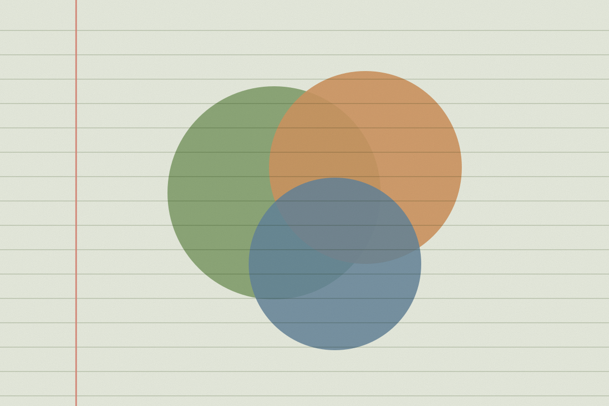
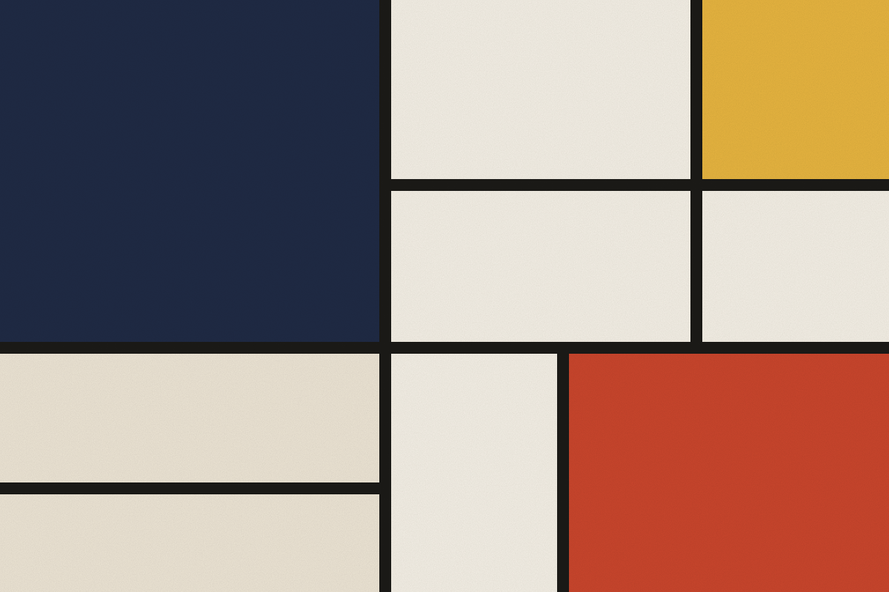
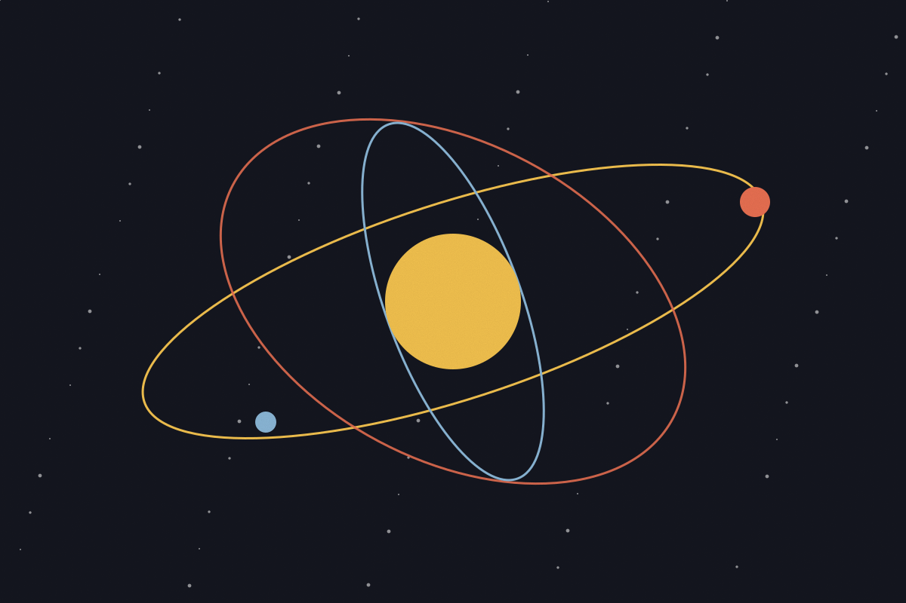
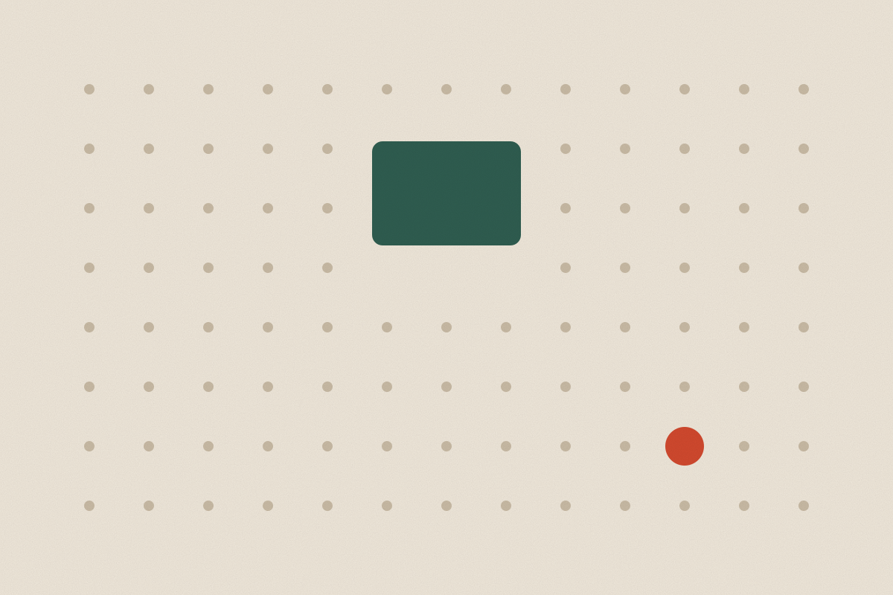

Featured essay · Design
The case for slower software
Speed is a feature, but so is the time to think. Notes on building tools that respect attention.
Jonah Reyes
· 4 min read
Est. 2019 · Essays on tools, craft and attention
Featured essay · Design
Speed is a feature, but so is the time to think. Notes on building tools that respect attention.
Jonah Reyes
· 4 min read

Craft
Crossing things out is a feature. Why the best editors keep your mistakes visible.
Ana Ferreira · · 4 min read

Design
Every setting you ship unchanged is a choice made on behalf of millions of people.
Jonah Reyes · · 9 min read
Writing
Start with the question someone is asking at 2am, not the architecture diagram.
Priya Nair · · 6 min read

Culture
Who pays for the libraries the internet runs on, and what happens when they stop.
Tomás Lindgren · · 11 min read

Craft
A changelog is a promise you keep in public. It is also the cheapest marketing you will ever do.
Ana Ferreira · · 5 min read
Engineering
Ten years on, the boring stack is still winning. Here is what changed and what did not.
Priya Nair · · 8 min read
From the archive
“A changelog is a promise you keep in public.”
Ana Ferreira, Why every team needs a changelog